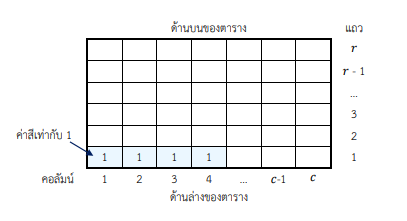
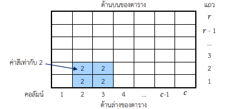
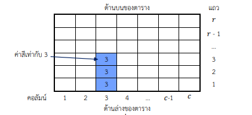
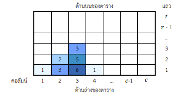
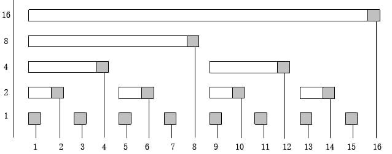
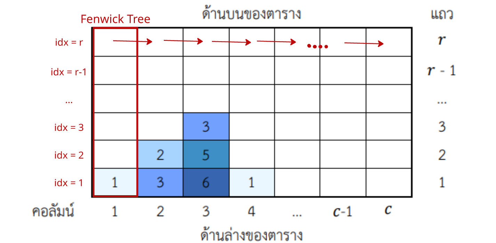

คำอธิบายวิธีทำพร้อม code สำหรับข้อ toi13_art
Author: Nagorn Phongphasura
Problem
สรุปโจทย์
เราจะลงจุดสีจำนวน \(N\) จุด โดยแต่ละครั้งที่ลงจุดจะมีข้อมูลดังนี้ :
- ตำแหน่งที่ลงสี \((s_i)\)
- ความสูงที่สีจะไหลขึ้นไป \((h_i)\)
- ความกว้างที่ลงสี (นับรวมช่องที่ \(s_i\)) ด้วย \((w_i)\)
- ค่าสี \((o_i)\) ซึ่งถ้าหากว่ามีการทับซ้อนของสีที่ลงในช่องใดๆ จะได้ว่า ค่าสีของช่องดังกล่าว จะเท่ากับผลรวมของค่าสีทั้งหมดในช่องนั้น
สิ่งที่ต้องทำ
นับจำนวนช่องที่มีค่าสีของช่องดังกล่าวเท่ากับ \(T\)
ตัวอย่าง
พิจารณาภาพดังต่อไปนี้
การลงสีครั้งที่ 1 : \(s_i = 1, h_i = 1, w_i = 4, o_i = 1 :\)

การลงสีครั้งที่ 2 : \(s_i = 2, h_i = 2, w_i = 2, o_i = 2 :\)
การลงสีครั้งที่ 3 : \(s_i = 3, h_i = 3, w_i = 1, o_i = 3 :\)
เมื่อรวมทุกสีแล้ว จะได้ภาพดังต่อไปนี้ :
เมื่อพิจารณาภาพดังกล่าว พบว่า :
- บริเวณที่มีค่าสีเท่ากับ 1 มีพื้นที่รวม 2 หน่วย
- บริเวณที่มีค่าสีเท่ากับ 2 มีพื้นที่รวม 1 หน่วย
- บริเวณที่มีค่าสีเท่ากับ 3 มีพื้นที่รวม 2 หน่วย
- บริเวณที่มีค่าสีเท่ากับ 5 มีพื้นที่รวม 1 หน่วย
- บริเวณที่มีค่าสีเท่ากับ 6 มีพื้นที่รวม 1 หน่วย
Constraints
\(1 \leq N \leq 10^5\)
\(1 \leq T \leq 10^7\)
\(1 \leq s_i \leq 3 \times 10^6\)
\(1 \leq h_i \leq 10^6\)
\(1 \leq w_i \leq 10^6\)
\(1 \leq i \leq N\)
Prerequisites
Fenwick TreeBinary SearchSweep Line
Solution
Fenwick Tree (Binary Indexed Tree)
Fenwick Tree จะทำการเก็บข้อมูล โดยจะให้ \(fenwick_i\) เก็บเป็น ข้อมูลในช่วง \(2^n\) ที่ใหญ่ที่สุดที่ \(2^n\) หาร i ลงตัว ซึ่งจริงๆแล้ว \(n\) นั้นก็คือ bit สุดท้ายที่ถูก set ใน \(i\) นั่นเอง
โครงสร้างของ Fenwick Tree จะเป็นดังภาพนี้:

ปัญหาถัดมาคือ สำหรับค่าค่าหนึ่ง เราจะทำการ \(update\) ยังไงดี นั่นคือ สมมติว่าเรากำลัง \(update\) ช่องที่ \(i\) เราจะหาช่องถัดไปที่ต้องมีค่าของ \(i\) ยังไงดี \((\)เช่น สมมติว่าเรา \(update\) ช่องที่ \(9\) เราจะต้องนำค่านั้นไปใส่ในช่องที่ \(10, 12, 16\) ด้วย เพราะช่องเหล่านั้นกำลังทับซ้อนค่าของ \(9\)\()\)
จากที่เรารู้ว่า \(fenwick_i\) จะเก็บ range ในช่วงที่ยาว \(2^n\) เมื่อ \(n\) คือ bit สุดท้ายของ \(i\) \((\)Least Significant Bit\()\) แล้วจบที่ \(i\) เราได้ว่า \(i\) จะเก็บ \([i - lsb(i) + 1, i]\)
ซึ่งเราจะได้ว่า ค่าต่อไปที่เราจะต้อง \(update\) คือ \(j = i + lsb(i)\) โดยเราสามารถพิสูจน์ได้ว่า \(j - lsb(j) \leq i\) ได้ง่ายๆ เพราะเนื่องจาก \(lsb(i) \le lsb(j)\) เราจะได้ว่า \(i = j - lsb(i)\) จะต้องมากกว่าหรือเท่ากับ \(j - lsb(j)\) นั่นเอง
คำถามต่อไปที่ตามมาคือ เราจะหา Least Significant Bit ของ \(i\) ใดๆอย่างไรให้เร็วๆ
เนื่องจากเรารู้ว่า \(-x\) ในเลขฐานสอง จะเท่ากับ \(\sim x + 1\)
เขียน \(x\) ในรูปเลขฐานสอง จะได้ว่า \(x\) สามารถเขียนได้ในรูป \(??..100..00\) หรือ \(\overline{a1b}\) เมื่อ \(b = 00..00\)
เมื่อเขียน \(-x\) ในรูปดังกล่าว จะได้ว่า \(-x = \sim \overline{a1b} + 1 = \overline{a011..11} + 1 = \overline{a100..00}\)
และเนื่องจาก \(a\) ที่อยู่ใน \(-x\) เป็น \(\sim\) ของ \(a\) จะได้ว่า \(x \& -x = LSB(x)\) นั่นเอง
สำหรับการ \(update\) เราก็ \(+= lsb(idx)\) ใช่มั้ย พอเป็น \(query\) เราจะคำนวณเป็น prefix ก็แค่ \(-= lsb(idx)\) นั่นเอง
โค้ดก็ง่ายๆเลย ตามนี้:
void update(int idx, int val) {
while (idx <= N) {
fenwick[idx] += val;
idx += idx & -idx
}
}
int query(int idx) {
int sum = 0;
while (idx > 0) {
sum += fenwick[idx];
idx -= idx & -idx;
}
return sum;
}
สามารถศึกษาเพิ่มเติมได้ที่นี่
IDEA
ในการทำข้อนี้ เราจะทำการพิจารณาตารางจากซ้ายไปขวา โดยจะใช้ Fenwick Tree ในการเก็บข้อมูลในแต่ละคอลัมน์ แล้วไล่จากซ้ายไปขวา

โดยเราจะทำให้ \(query(idx)\) ของตัว Fenwick Tree ของเรา คืนค่ามาเป็นค่าสีในช่อง (แถว) ที่ \(idx\) ในคอลัมน์ที่พิจารณาอยู่
สังเกตว่า เนื่องจาก Fenwick Tree ทำงานโดยการ \(update\) ตั้งแต่ตำแหน่งเริ่มต้น จนช่องสุดท้าย สำหรับแต่ละสีในแต่ละ เราสามารถทำการ \(update\) 2 รอบ นั่นคือ \(update(1, o), update(h + 1, -o)\)
ซึ่งโดยหลักการ Prefix Sum เมื่อเรา \(query\) ตำแหน่งใดๆแล้ว หากความสูงดังกล่าวมันสูงกว่าตำแหน่งที่เกิดการ \(update -o\) ไปแล้ว จะทำให้หักล้างกับตำแหน่งที่เรา \(update +o\) ไป การ \(query(idx)\) จึงได้ค่าสีในช่องดังกล่าวนั่นเอง
ISSUE
แต่จะมีปัญหาเกิดขึ้น นั่นคือ การไล่จากซ้ายไปขวาตรงๆ และ \(update\) ทุกสีในคอลัมน์นั้น จะช้าเกินไป เราจึงสามารถทำการ Optimize โค้ดได้โดยการใช้ Sweep Line Algorithm ซึ่ง :
-
เราจะใช้
vectorในการเก็บว่า สีแต่ละสี ถูกหยดลงไปในคอลัมน์ใดบ้าง ซึ่งข้อมูลที่จะเก็บก็จะเป็น \((\text{ตำแหน่ง}, \text{ความสูง}, \text{ค่าสี})\)- ข้อมูลที่เราใส่เข้าไป จะเป็น \((s_i, h_i, o_i), (s_i + w_i, h_i, -o_i)\) เพื่อจะได้ทำลบสีเก่าออก
-
ทำการ \(sort\) ข้อมูลตามตำแหน่ง เพื่อว่าเราจะสามารถ \(sweep\) ตามข้อมูลใน
vectorตามลำดับ- แต่ละรอบที่เรากวาด เราจะมีข้อมูล \((s, h, o)\) โดยในตัว Fenwick Tree เราจะต้องทำ \(update\) 2 รอบ ได้แก่ \(update(1, o)\) และ \(update(h + 1, o)\) เพื่อให้ค่าสีหักล้างกัน ดังที่เคยกล่าวไว้
ตอนนี้ เราได้โครงสร้างของ solution ของเราเรียบร้อยแล้ว ปัญหาที่เหลือตอนนี้คือแค่หาจำนวนช่องที่จะมีค่าสี \(= T\)
สังเกตว่า สมมติว่าตอนนี้เรากำลัง \(update\) คอลัมน์ที่ \(s_i\) แล้วไม่มีการ \(update\) จนถึงคอลัมน์ที่ \(s_{i+1}\) จะได้ว่า จำนวนช่องที่มีค่าสีเท่ากับ \(T\) จะเท่ากับ \((\)จำนวนช่องที่มีค่าสีเท่ากับ \(T\) ในคอลัมน์ที่ \(s_i)\) \(\times\) \((s_{i+1} - s_i)\) (ในที่นี้ index ที่เราพิจารณา จะเป็น index ใน vector ใหม่ที่เราสร้างขึ้นมา และเรียงข้อมูลโดย \(s\) เรียบร้อยแล้ว)
Observation
สังเกตได้ว่า เพราะการ \(update\) จะทำจากด้านล่างเสมอ (แถวที่ 1) ทำให้สีใดๆที่อยู่ด้านบน จะต้องอยู่ด้านล่างด้วย ทำให้ด้านล่างมีการรวมของสีที่มากกว่าด้านบน จึงได้อสมการดังกล่าว
คำถามต่อมาคือ "อสมการนี้สามารถช่วยให้เราแก้ปัญหานี้ได้อย่างไร"
เราสามารถใช้ความจริงนี้ แทนที่จะไล่หาทุกช่องที่มีค่าสี \(= T\) เราสามารถใช้ Binary Search ในการหาได้นั่นเอง โดยเราจะทำการ Binary Search หาตำแหน่งที่สูงที่สุดที่ \(query(idx) = T - 1\) และหาตำแหน่งที่สูงที่สุดที่ \(query(idx) = T\) และหาจำนวนช่องในช่วงนั้น จะได้จำนวนช่องในคอลัมน์ที่ \(s_i\) ซึ่งมีค่าสี \(= T\) นั่นเองงง
Code
#include <bits/stdc++.h>
using namespace std;
long long fenwick[1000005];
// fenwick update
void update(int idx, long long val) {
while (idx <= 1000004) {
fenwick[idx] += num;
idx += idx & -idx;
}
}
// fenwick query
long long query(int idx) {
long long sum = 0;
while (idx > 0) {
sum += fenwick[idx];
idx -= idx & -idx;
}
return sum;
}
// binary search หาคำแหน่งที่น้อยที่สุดที่ query(idx) <= t
int bsearch(long long t) {
int l = 1, r = 1000001, ans = 0;
while (l <= r) {
int mid = l + (r - l) / 2;
if (query(mid) <= t) {
ans = mid;
r = mid - 1;
}
else {
l = mid + 1;
}
}
return ans;
}
int main() {
cin.tie(NULL)->sync_with_stdio(false);
// input
int n;
long long t;
cin >> n >> t;
// input + sweepline
vector<tuple<long long, long long, long long>> events;
for (int i = 0; i < n; i++) {
long long s, h, w, o;
cin >> s >> h >> w >> o;
events.emplace_back(s, h, o);
events.emplace_back(s + w, h, -o);
}
// เรียงการ update ตามคอลัมน์ (s)
sort(events.begin(), events.end());
long long ans = 0;
for (int i = 0; i < (int)events.size() - 1; i++) {
// ดึงค่า s[i], h[i], o[i]
long long s = get<0>(events[i]);
long long h = get<1>(events[i]);
long long o = get<2>(events[i]);
// update
update(1, o);
update(h + 1, -o);
// ดึงค่า s[i + 1]
long long ss = get<0>(events[i + 1]);
// เพิ่มค่าคำตอบ
ans += (ss - s) * (bsearch(t - 1) - bsearch(t));
}
cout << ans;
}
Total Time Complexity
\(\mathcal{O}(n \log^2 n)\)